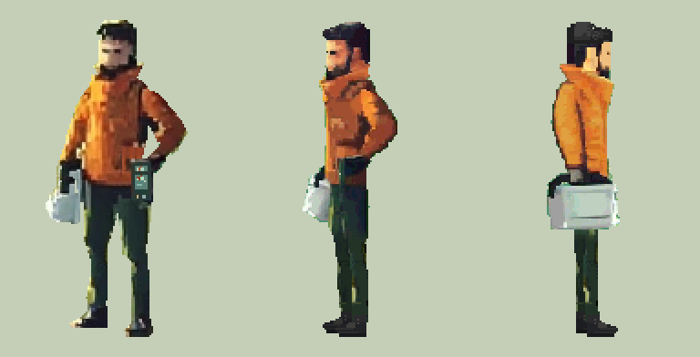
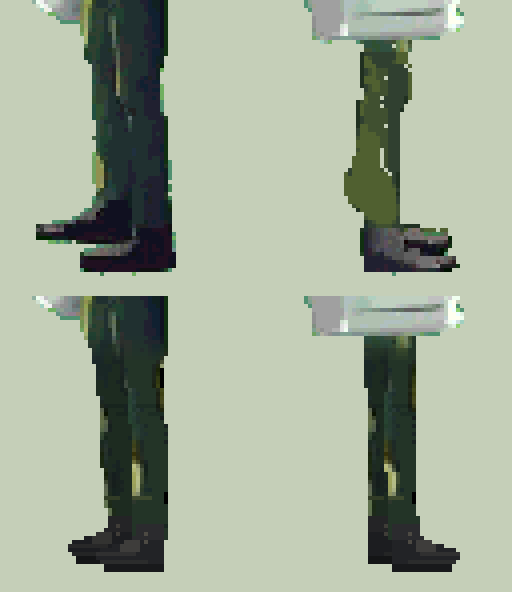
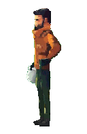
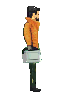
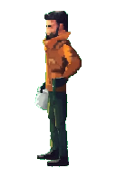
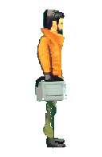
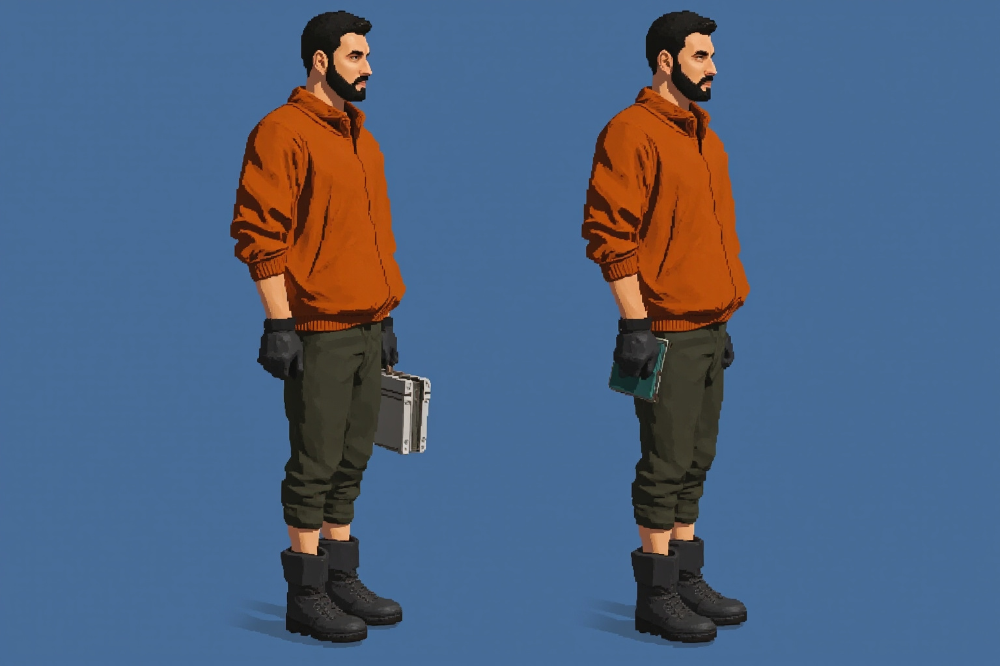
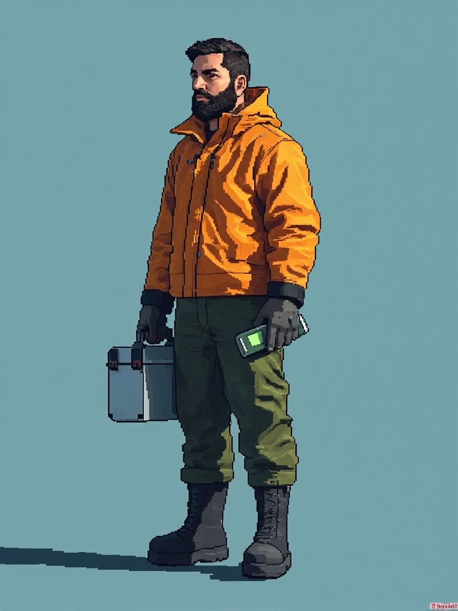
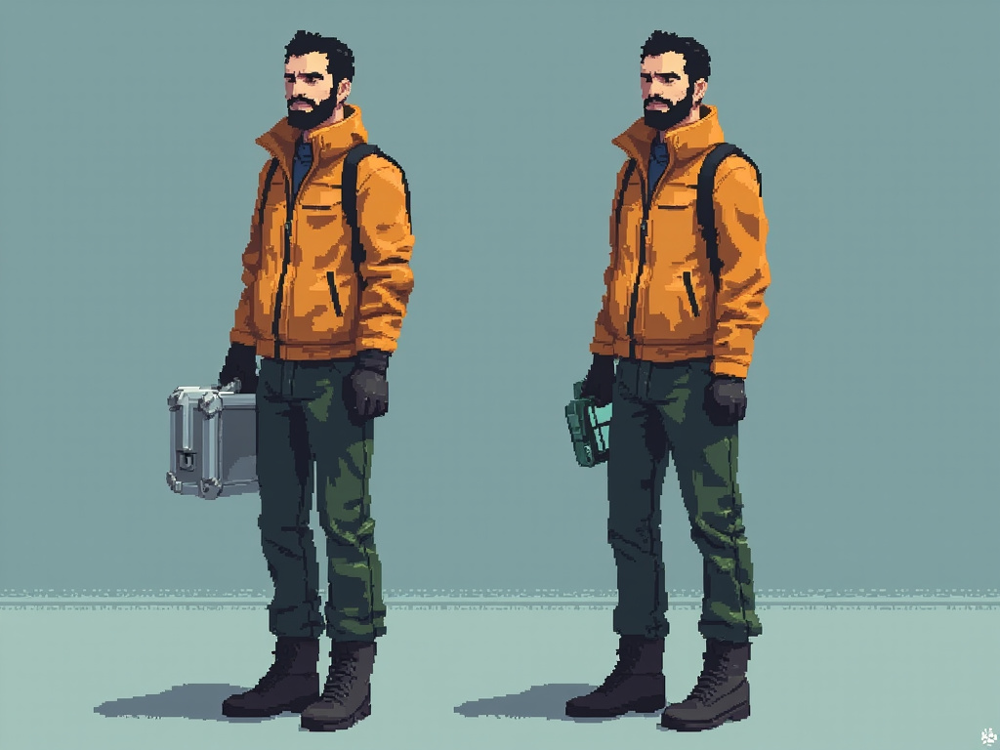
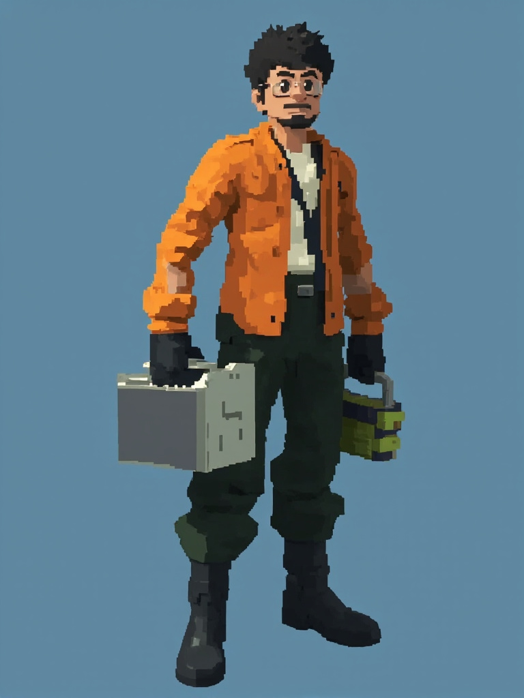

先定站姿，再做动作
先把同一个人画完整。
原画保留为身份基准。本轮重画两侧静态裤腿与鞋的轮廓，参照原画布料色块补足膝盖、小腿、裤脚与鞋面的连接。
仍未定稿：新裤腿和鞋面的材质是否融入上身，需要继续评审；面容、肩部体积与光照也未完全统一。下方保留修改前后对照。
01 / 同一尺度，完整看人
身份原画与两侧静态修订。
保持已有头颈肩与器物位置，将下半身的轮廓和布料作为一个完整区域处理。

本轮修改：两侧裤腿从膝盖到裤脚连续收束；鞋帮接住裤脚，区分鞋面与薄鞋底。布料色块参考原画，去掉原视频中断续的黄绿色斑块和绿色溢边。
仍需解决：新旧布料质感是否一致，远近腿的遮挡是否自然；左右脸型、肩宽、负重弯臂和工具箱透视仍待修正。
02 / 修改前后
从膝盖到鞋底，单独检查。
左列朝左，右列朝右；上排为你指出的旧稿，下排为本轮静态重画。此图按原始像素 4× 放大，可点击查看原尺寸。

03 / 保持全身关系，再看接触
颈部、衣领和裤腿一起检查。
以下均为 2× 整数像素显示。这些是静态修订候选，尚不能直接用于新步态。


04 / 保留改动前的依据
原始两侧，作为对照。
旧视频提供了朝向参照，也带来了身份、腿脚结构与光色变化。它的转身中间帧不能直接当作合格的稳定站姿。


查看本批四张淘汰候选与原因
MMX 本批实际生成四张。没有一张同时满足人物身份、严格侧面和像素质感，全部退出当前人物素材。



